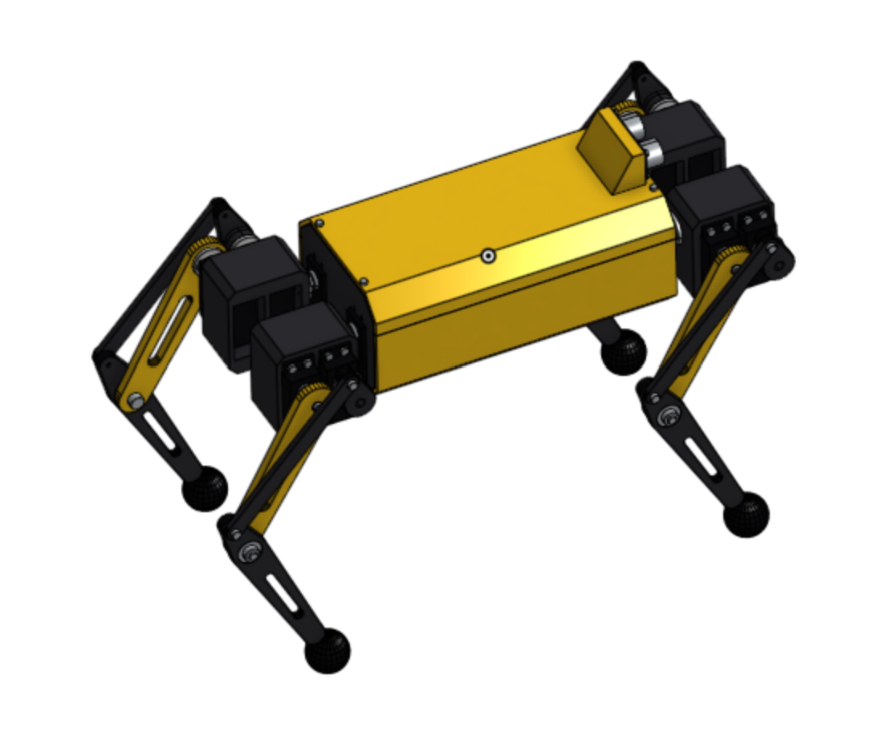
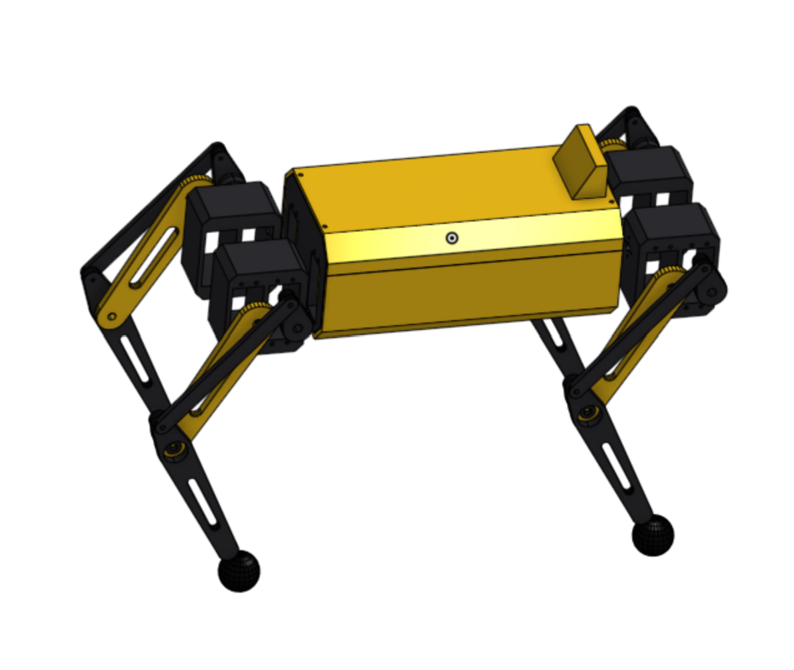

New CAD Models


Today I created CAD models with the final hardware, and made a copy without any of the hardware so the parts would be printed easier. I also printed one final leg module today, and plan on ordering some of the materials soon to test one leg.